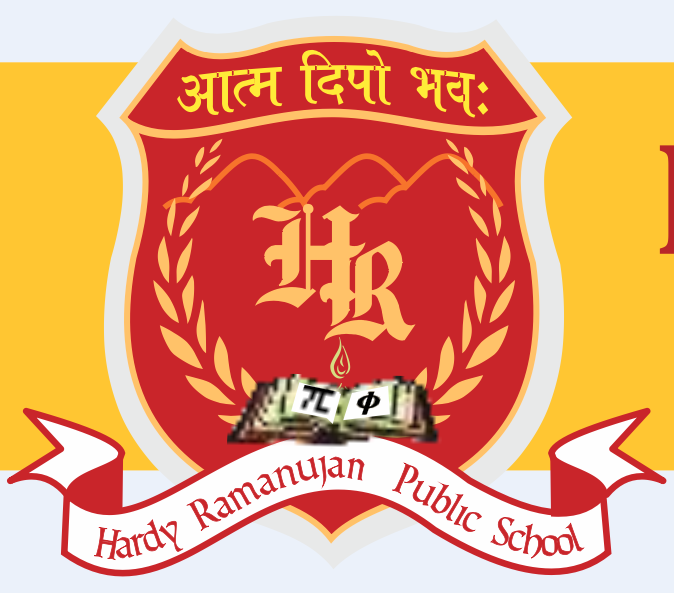

|  |
Hardy Ramanajuan Public SchoolAatm Deepo Bhawah be a leading light Hardy ramanujan Public school is a co-educational English Medium School at Saibari Siliguri, at the foothills of Darjeeling. The proposed school, under Central Board of Secondary Education (CBSE) curriculum, imparts education with modern facilities. It has a sprawling campur situated in the lap of nature at picturesque estate. The school offers pragmatic and qualitative all round education to it's students. It has been designed to have spacious and airy classrooms for conducive learning |
1887-1920
Ramanujan was a self taught mathematician, who in course of time established himselfas a one of India's greatest mathematical geniuses. He is known for his contribution to mathematical concepts such as number theory ,analysis of infinite series and continued fractions among others. In India December 22nd, is observed annually as 'National Mathematics day' to commemorate the the birth anniversary of the legendary mathematician. Ramanujan left behind himself 3 notebooks and a bunch of papers with summaries and results with little or no proof.1729 is known as Ramanujan number. His biography titled' The man who knew infinity 'was published in 1991
1877-1947
He was an English mathematician known for his achievements in number theory and mathematical analysis. He was the mentor of Srinivasa Ramanujan and even arranged for his study and research in England. From formulation of essays, to bringing in new techniques in various mathematical methods. Hardy proved himself to be a highly significant figure of the field.
We strongly believe that "Education without a self realization is like force without direction". Our passion is to foster excitement and love for learning across all areas of curriculum, drawing and developing each child's individual gifts and talents. At the core of our vision is the premise that the quality of relationships experienced by a child during their primary schooling has a deep and lasting impact on their future development. Our core values will define the way we will care for ,enrich and teach every child at Hardy Ramanujan Public School. Our experienced and committed faculty will promote character building through the principle of Satya, Ahimsa, Charity, Self restraint and Kindness. If you are looking for a new approach to education that will deliver an inspirational, innovative way of learning, at the same time, nurturing the hidden talent of your child, then Hardy Ramanujan Public School is for you because we believe that each child is potentially divine.
Our Aim |
OUR ENDEAVOUR |
|
|
| Infrastructre | ⭐️ ⭐️ ⭐️ ⭐️ ⭐️ |
| Teaching Staff | ⭐️ ⭐️ ⭐️ ⭐️ ⭐️ |
| CUltural Activites | ⭐️ ⭐️ ⭐️ ⭐️ ⭐️ |
| Sports | ⭐️ ⭐️ ⭐️ ⭐️ ⭐️ |